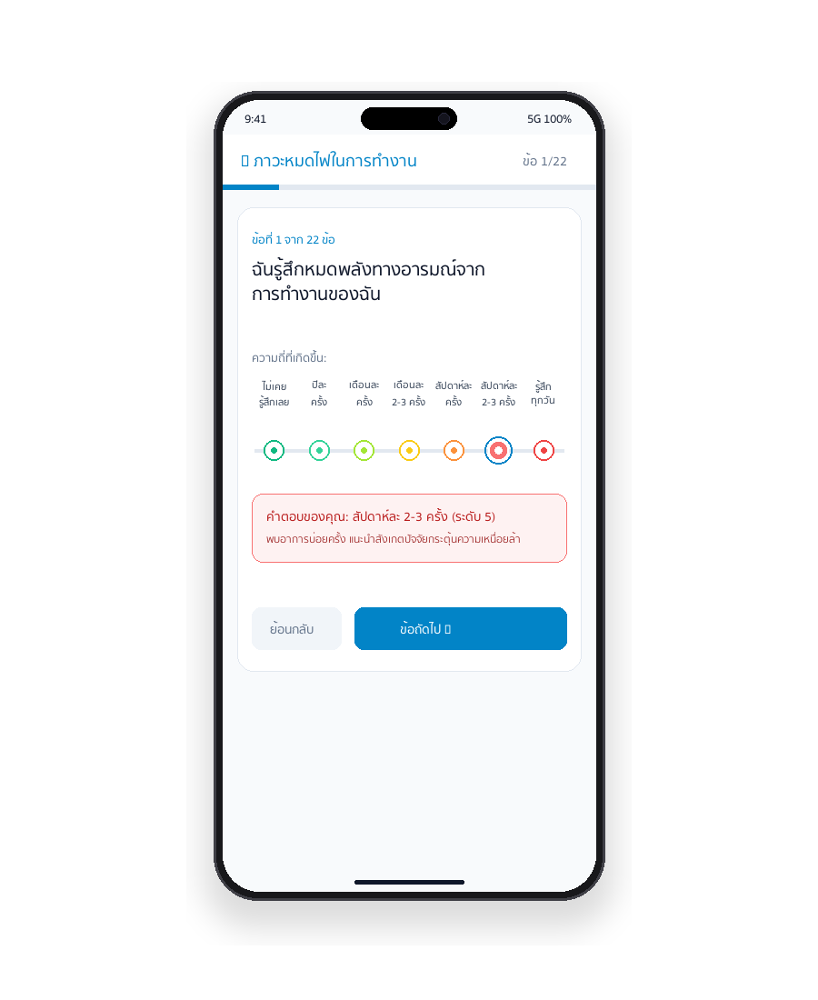
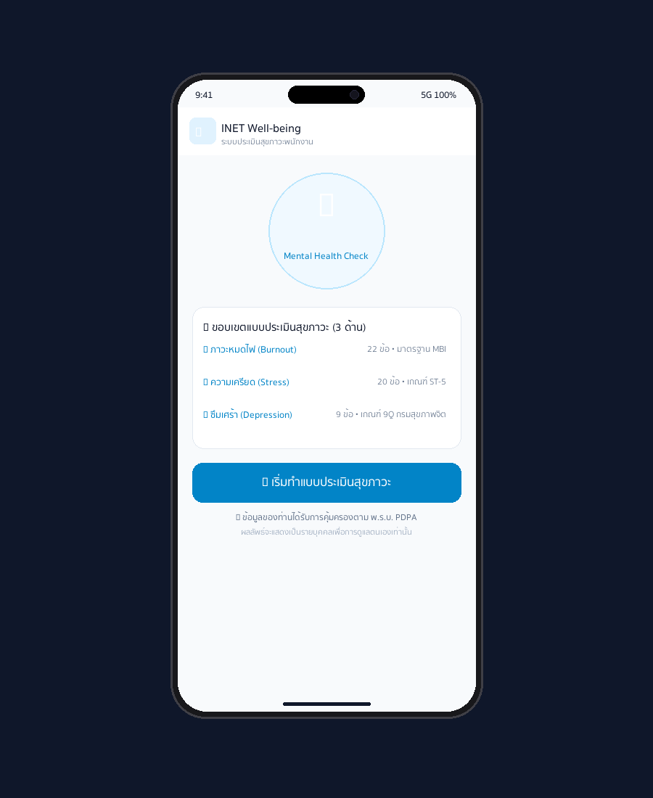
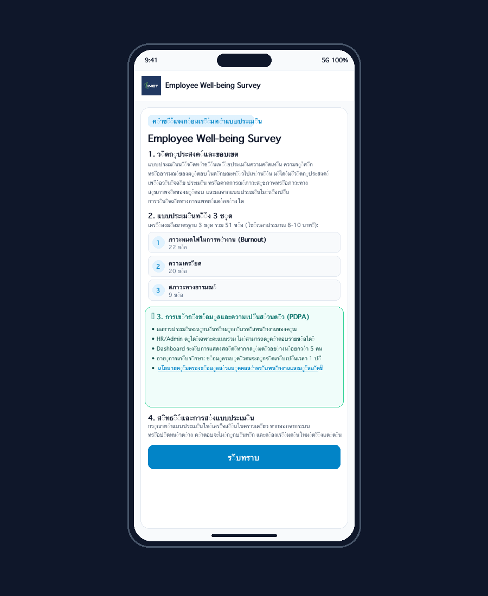
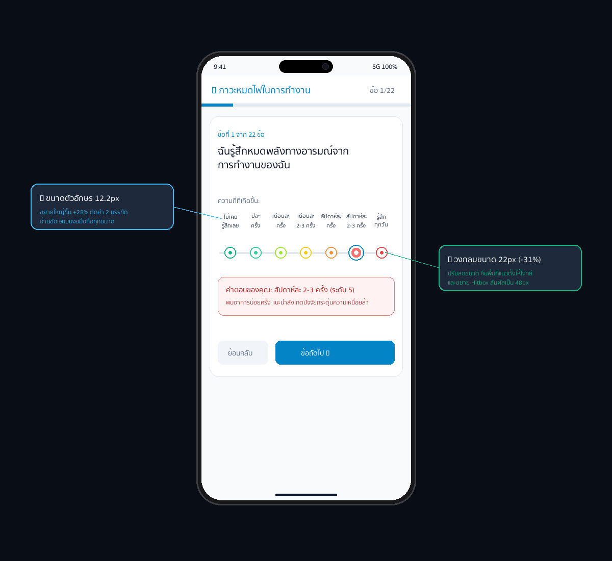
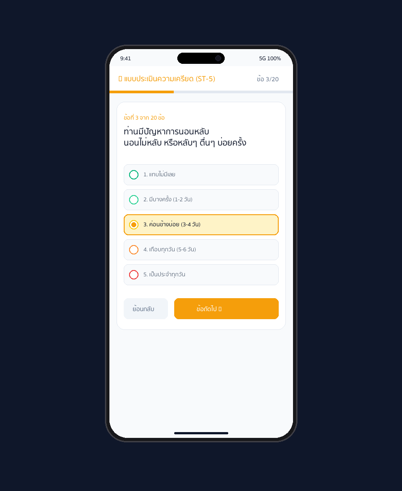
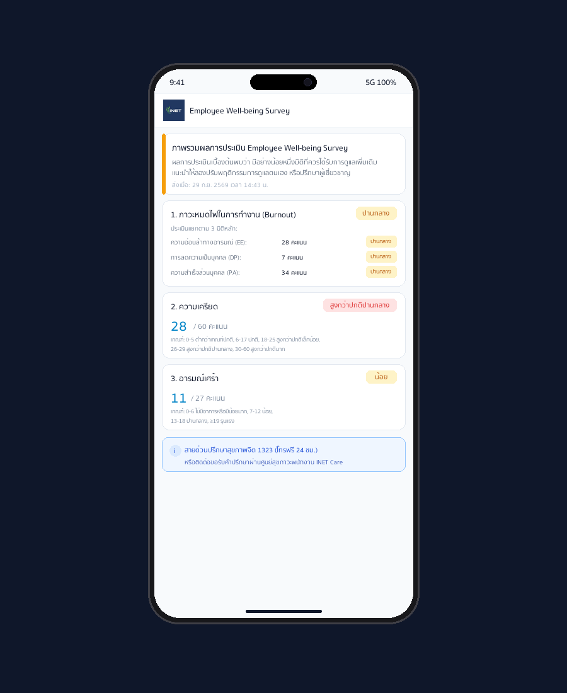

ระบบประเมินสุขภาวะทางจิตวิทยาพนักงาน
การปรับปรุงอินเทอร์เฟซเพื่อรองรับการใช้งานผ่านโทรศัพท์มือถือ 100%
นำเสนอผลการแก้ปัญหาตัวหนังสือเล็ก และการจัดสัดส่วนคำตอบ 7 ระดับ (Likert Scale) ให้ตอบสนองอย่างสมบูรณ์แบบบนสมาร์ทโฟนทุกขนาดหน้าจอ พร้อมทั้งปรับโครงสร้างตามหลักสรีระการถือโทรศัพท์มือถือ (Thumb Zone)

เปรียบเทียบผลลัพธ์: แบบเดิม (1 บรรทัด) vs แบบปรับปรุงใหม่ (2 บรรทัด)
แก้ปัญหาตัวหนังสือเล็ก (9.5px) และวงกลม 32px ที่กินพื้นที่หน้าจอ
ข้อความยาวเรียงแถวเดียว
- • ตัวหนังสือเล็กมาก (9.5px - 10px)ข้อความยาว 10-18 ตัวอักษร ถูกบีบอัดจนต้องเพ่งสายตา
- • วงกลม 32px ใหญ่เทอะทะกินพื้นที่แนวตั้ง ดันให้โจทย์คำถามถูกบีบขึ้นไปชิดขอบบน
- • ตัดคำผิดสัทศาสตร์บนจอเล็กบนจอ 360px เกิดการตัดพยางค์คำตกขอบ ไม่เป็นระเบียบ
ตัดคำ 2 บรรทัดตามหลักภาษาศาสตร์
- • ขยายขนาดฟอนต์เป็น 12.2px (+28%)ตัดคำเป็น 2 บรรทัด ช่วยลดความกว้างต่อแถว อักษรจึงขยายใหญ่ขึ้นทันที
- • วงกลมขนาด 22px (-31%) สมดุลลงตัวคืนพื้นที่แนวตั้งให้โจทย์คำถามเด่นชัด สบายตายิ่งขึ้น
- • ขยาย Hitbox สัมผัสเป็น 48pxแตะเลือกคำตอบได้ง่ายด้วยนิ้วโป้งตามมาตรฐาน Apple HIG
หน้าหลัก (Employee Portal) สำหรับโทรศัพท์มือถือ
จัดวางเมนูและปุ่มเข้าทำแบบประเมินตามหลักสรีระการถือโทรศัพท์ (Thumb Zone)
- ✓ ตราสัญลักษณ์ INET และชื่อระบบชัดเจน จัดวางในขนาดกะทัดรัด พร้อมปุ่มโทรศัพท์ติดต่อ HR และปุ่มสำหรับ Admin ในระนาบเดียวกัน
- ✓ ปุ่มหลักเข้าทำแบบประเมิน (Primary CTA) ขนาดใหญ่ สูง 50px ขยายเต็มความกว้าง แตะได้ง่ายด้วยนิ้วโป้งมือเดียว พร้อมเอฟเฟกต์ยุบตัวเมื่อกด
- ✓ การ์ดแสดงขอบเขตแบบประเมิน (Scope Card) สรุป 3 แบบประเมิน (Burnout 22 ข้อ, ความเครียด 20 ข้อ, สภาวะทางอารมณ์ 9 ข้อ รวม 51 ข้อ ~8-10 นาที)
- ✓ ข้อความแจ้งเตือนความปลอดภัยตาม พ.ร.บ. PDPA ระบุสิทธิการเก็บรักษาข้อมูลเป็นความลับชัดเจน เพื่อสร้างความมั่นใจแก่ผู้ประเมิน

คำชี้แจงก่อนเริ่มทำแบบประเมิน & ความยินยอม PDPA
Employee Well-being Survey: ชี้แจงวัตถุประสงค์ ขอบเขต และนโยบายคุ้มครองข้อมูลส่วนบุคคล
- ✓ วัตถุประสงค์และข้อจำกัดทางการแพทย์ (Disclaimer) ประเมินความคิดเห็น ความรู้สึก หรืออารมณ์ทั่วไป มิใช่การวินิจฉัยทางการแพทย์
- ✓ สรุปเครื่องมือมาตรฐาน 3 ชุด (51 ข้อ ~8-10 นาที) 1. Burnout (22 ข้อ), 2. ความเครียด (20 ข้อ), 3. สภาวะทางอารมณ์ (9 ข้อ)
- ✓ การคุ้มครองข้อมูลส่วนบุคคล (PDPA 1 ปี) HR ดูได้เฉพาะคะแนนรวม ไม่เห็นคำตอบรายข้อ มีเกณฑ์ระงับสถิติ (k-anonymity n ≥ 5) และเก็บข้อมูล 1 ปี
- ✓ ลิงก์นโยบายคุ้มครองข้อมูลส่วนบุคคล INET มี Hyperlink ตรงสู่นโยบาย PDF ทางการของ INET ให้พนักงานคลิกเปิดอ่านได้ทันที

นวัตกรรม Likert Scale 7 ระดับ 2 บรรทัด & วงกลม 22px
ต้นแบบสำคัญในการแก้ปัญหาการแสดงผลตัวเลือก 7 ระดับบนหน้าจอขนาดเล็ก
-
✓ การตัดคำ 2 บรรทัดตามสัทศาสตร์ธรรมชาติ
เช่น
ไม่เคยรู้สึก,
เช่นนั้นเลยสัปดาห์ละอ่านง่าย เป็นระเบียบ ไม่ตกขอบจอ
2–3 ครั้ง - ✓ เส้นเชื่อมระดับคะแนน (Gradient Track) เส้นแทร็กพาดผ่านกึ่งกลางวงกลมอย่างแม่นยำ พร้อมไล่ระดับสีจากเขียว ➔ เหลือง ➔ แดง
- ✓ การ์ดยืนยันคำตอบสด (Live Feedback Card) เมื่อแตะเลือกคำตอบ การ์ดด้านล่างจะสรุปข้อความระดับความถี่และคำแนะนำเบื้องต้นทันที
- ✓ ปุ่มย้อนกลับและข้อถัดไปใน Thumb Zone จัดวางตำแหน่งให้อยู่ในรัศมีการเอื้อมของนิ้วโป้ง ลดการเปลี่ยนท่าถือโทรศัพท์

แบบประเมินความเครียด (20 ข้อ) และ สภาวะทางอารมณ์ (9 ข้อ)
แบบประเมินมาตรฐานเพื่อสำรวจระดับความเครียดและสภาวะทางอารมณ์ของพนักงาน
- ✓ สเกล 5 ระดับ (ความเครียด 20 ข้อ) ตัวเลือก 5 ระดับมีระยะห่างกว้างเป็นพิเศษ แตะคำตอบได้ง่ายและชัดเจน
- ✓ สเกล 4 ระดับ (สภาวะทางอารมณ์ 9 ข้อ) เกณฑ์ประเมินสภาวะทางอารมณ์ (ไม่เลย ➔ เกือบทุกวัน) พร้อมระบบแจ้งเตือนเชิงบวก
- ✓ คำชี้แจงให้ทำเสร็จสิ้นในคราวเดียว คำแนะนำให้พนักงานตอบต่อเนื่องจนเสร็จสิ้น เพื่อความสมบูรณ์และถูกต้องของผลวิเคราะห์
- ✓ แถบความคืบหน้า (Progress Bar) ด้านบน แสดงเปอร์เซ็นต์และจำนวนข้อที่ทำไปแล้ว ช่วยให้พนักงานบริหารเวลาในการตอบแบบประเมิน

แดชบอร์ดสรุปผลการประเมินสุขภาวะรายบุคคล
ประมวลผลคะแนน 3 มิติ พร้อมข้อแนะนำการดูแลตนเองและช่องทางรับความช่วยเหลือ
- ✓ การ์ดสรุปคะแนน 3 มิติ (3-Pillar Cards) แสดงคะแนน Burnout, ความเครียด, และอารมณ์เศร้า แยกรายด้านพร้อมแถบวัดระดับ
- ✓ รหัสสีสัญญาณไฟจราจร (Traffic-Light Status) เขียว (สุขภาวะดี/ปกติ), เหลือง (เฝ้าระวัง/ปานกลาง), แดง (ควรได้รับคำปรึกษา)
- ✓ คำแนะนำการดูแลสุขภาพจิตเชิงปฏิบัติ (Actionable Advice) เนื้อหาคำแนะนำปรับเปลี่ยนตามระดับคะแนนของแต่ละบุคคลอย่างจำเพาะเจาะจง
- ✓ ช่องทางสายด่วนและศูนย์สุขภาวะพนักงาน (Hotlines) ข้อมูลเบอร์สายด่วนสุขภาพจิต 1323 และช่องทางนัดหมายพูดคุยกับผู้เชี่ยวชาญ

ตารางสเปกการรองรับหน้าจอ & สรุปความพร้อมส่งมอบ
ผ่านการทดสอบบนอุปกรณ์มาตรฐาน iOS และ Android ครอบคลุมตั้งแต่ 360px ถึง 430px
| ขนาดหน้าจอ (Viewport) | ตัวอย่างอุปกรณ์ | ขนาดตัวอักษร | ขนาดวงกลม | Line-Height | สถานะการรองรับ |
|---|---|---|---|---|---|
| หน้าจอเล็ก (≤ 380px) | iPhone SE, Galaxy A-series | 0.70rem (~11.2px) | 20 × 20 px | 1.16 | ✓ ไม่ตกขอบ 100% |
| หน้าจอมาตรฐาน (≤ 640px) | iPhone 14/15/16, S24 | 0.76rem (~12.2px) | 22 × 22 px | 1.22 | ✓ สมดุลสูงสุด (แนะนำ) |
| หน้าจอคอมพิวเตอร์ (> 640px) | Tablet, Laptop, Desktop | 0.88rem (~14.0px) | 28 × 28 px | 1.25 | ✓ กว้างขวาง คมชัด |
🎯 สรุปผลความพร้อมการส่งมอบ (Production Ready)
Prototype และ Simulator ผ่านการทดสอบครบถ้วน พร้อมส่งต่อเข้าสู่กระบวนการลงนามยืนยัน Requirement